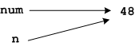

Writing functions: is_even()
We've used several of Python's built-in functions, but how do we write our own? This is most easily shown by example, so to be concrete let's suppose we want a function that tells us if a number is even.
It's usually easiest to write a function by starting with how you want to use it. Let's say we are working on a game and wish we could write,
num = random.randint(0,100)
if is_even(num):
print "Good news your magic number is even! 10 bonus points for you."
else:
print "Bad news, your magic number is odd."The good thing about specifying the use of our function before writing it is that we now know,
- what the name of the function should be:
is_even, - that it will take one parameter,
numin our case, - that it returns a Boolean value, i.e. either
TrueorFalsevalue.
So we know its name, parameter and return type, and we know from previous experience how to implement its core functionality:
if n%2 == 0:
# It's even
else:
# It's oddAll we need now is to tie these things together with the necessary syntax like this,
import random
def is_even(n):
if n%2 == 0:
return True
else:
return False
num = random.randint(0,100)
if is_even(num):
print "Good news your magic number is even! 10 bonus points for you."
else:
print "Bad news, your magic number is odd."Notes:
- The keyword
defmarks the begining of a function definition. It is followed by the name of the function, the parameter list enclosed in parentheses, and a colon. - The code to be executed when the function is called is indented after the definition line.
- The
returnstatement terminates the execution of the function as soon as it is executed and returns the specified value (eitherTrueorFalseabove). As you can see above a single function may have more than one return statement. - The names of the parameter in the program and in the function do not
need to be the same.
numin the program is referred to asnin the function.
You may wonder looking at the code above what we have gained. After all we
have removed num%2 == 0 from an if test and
replaced it with 5 lines of code — this hardly seems simpler! What you
can't see in the example above (but will a few examples in the future) is
that this new function can be reused easily in other programs.
This speaks to why the names of the parameter do not need to be the same
in the function and the program — if they did the function could not be
easily reused! Imagine if the built-in square root function could only be
used if the variable it was passed was named x. That's not very
reusable.
Instead the name in the function definition line is aliased to the value named in the call to the function. We can picture memory looking like this before the function is called,

Like this while the function is executing (see how n the name
of the parameter in the function is an alias for the value of
num the name of 48 in the program?),

And like this again after the function has terminated,

Note that the value of num was not changed by the function
and this is as it should be. We don't want a function that decides if a
number is even to change the number in the course of deciding.
Note also that functions do not leave any lasting trace in memory. When the function terminates any memory it has been using is freed and returned to the system. This can lead to a third benefit of functions. In some types of programs they reduce memory consumption because memory is only allocated while it is needed, whereas normal variables exist for the entire run of the program (or at least from the time they are created until the end of the program).